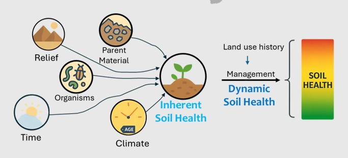

Research

Where I work
Base imagery: NASA EOSDIS GIBS, VIIRS true color. Street layer: © OpenStreetMap contributors. Built with Leaflet.

Base imagery: NASA EOSDIS GIBS, VIIRS true color. Street layer: © OpenStreetMap contributors. Built with Leaflet.